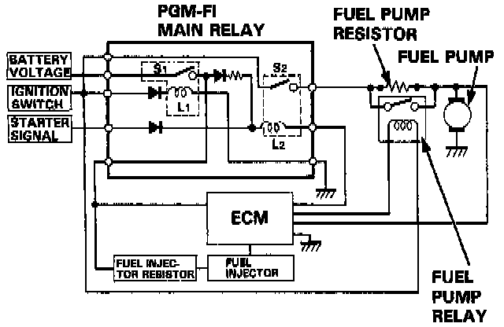

Main Relay (Computer/Fuel System): Description and Operation
PURPOSE/OPERATION

The PGM-FI main relay actually contains two individual relays.
The relay is located behind the passenger's seat back panel. One relay is energized whenever the ignition is on which supplies the battery voltage to the engine control module, power to the fuel injectors, and power for the second relay. The second relay is energized for 2 seconds when the ignition is switched on, and when the engine is running which supplies power to the fuel pump.